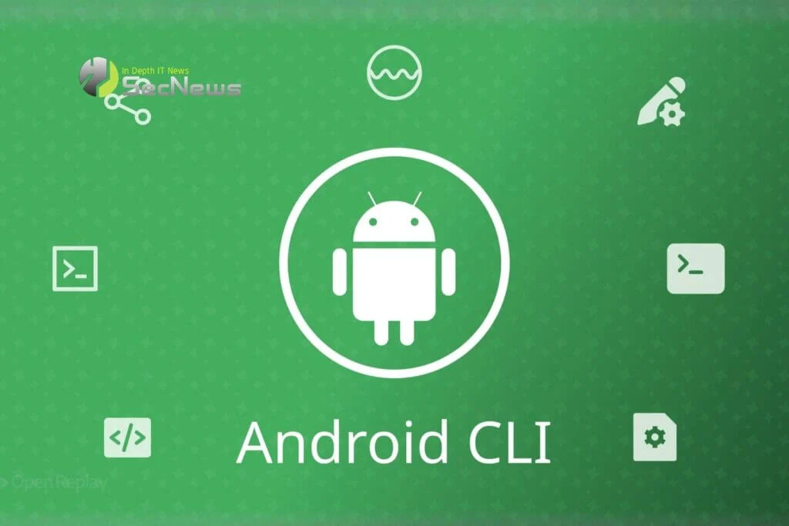

Carlos José Villanueva Ramos
📅 September 25, 2026
🛠️ Build your way: Use any AI coding agent you prefer in Android Studio

AI engineering tools have become essential productivity multipliers, but every developer and team has their preferred coding assistant. Recognizing this, Android Studio is taking a massive leap forward by introducing "Bring Your Own Agent" (BYOA).
With this new feature, you can seamlessly integrate your favorite coding agent — such as Anthropic's Claude Agent, OpenAI's Codex, or Google Antigravity — directly into Android Studio, supercharging it with the IDE's optimized AI infrastructure.
Your agents, your AI plan
BYOA combines your preferred agent with native IDE intelligence via the Agent Client Protocol (ACP). This unlocks critical engineering advantages:
Source code awareness and token efficiency: Android Studio provides the complete project graph, build configurations, and platform details directly to your agent so it filters only what is relevant, reducing latency and token costs.
Native tool injection: We connect build diagnostics, Jetpack Compose previews, Android SDK tools, and emulator controls straight to your agent so it can test, diagnose, and execute right inside the environment.
Seamless flexibility: Connect any ACP-compatible agent, log in with your consumer or enterprise plan, and swap agents effortlessly if one runs out of quota or performance expectations.
For developers in the Google ecosystem, the recommended "Google Antigravity" agent provides access to top-tier models like Gemini Flash alongside expanded usage quotas using standard Google accounts or AI Pro/Ultra plans.
My take: this openness proves that AI-assisted mobile development has fully matured. Instead of locking developers into a single proprietary IDE assistant, the future belongs to open architectures where you choose the brain and let the native environment handle the heavy lifting.
Source: Matthew Warner, Product Manager, Android Developer Experience